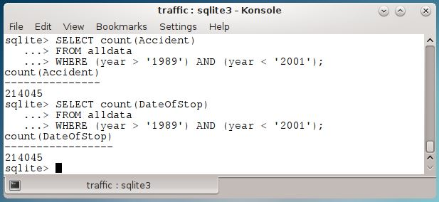

Even a cursory look at these numbers show men consistently getting twice as many citations as women over the entire 15 year period which is a strange result. The US Census website reports that Maryland has a slightly large proportion of females (51.5%) than males (48.5%).
Couples may debate just how surprising, but it is at least a little surprising that men would be cited twice as often as women. Perhaps there is some sort of selection going on that skews the data set. A few more queries indicate that this is, in fact, the case. All of the citations are related to incidents where there was an accident.

While it is certainly interesting that accident rates appear to be skewed towards the early part of the week, month and year if this data set only lists citations related to accidents, then it means that there is insufficient data to answer the original question. According to the day-month figures, the number of accidents per day is fairly constant. And so, accident related tickets should be too. Additional data on non-accident related tickets would be needed to see if non-accident citations are also issued on a consistent basis. That data is missing.
So the original question, are there ticket quotas, is unresolved. To it a few others can be added. Do men really have twice as many accidents as women or do they just get ticketed twice as much for them? Why are there spikes in the accident rate at the beginning of the week? Is there a significant number of accidents where tickets aren't issued? Is there a way to determine how many people and or vehicles were involved in a given accident? And perhaps the sharpest question for this audience -- how can researchers get access to the additional data needed to answer these questions?
The Maryland data set is rich and can provide many intersting avenues of research. Unfortunately it only contains a subset of all citations issued and so it is insufficient to answer the question about quotas. However, working with this dataset has been a useful exercise, and especially valuable in highlighting the need to check data integrity, clean incoming data and validating assumptions before drawing conclusions.
For those still looking for a few more details, the next page discusses one or two points that didn't really fit in the story but that may be of some interest.